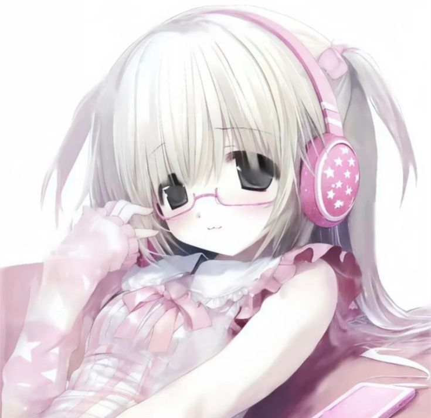
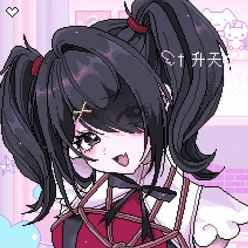
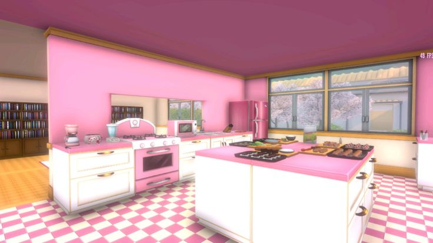
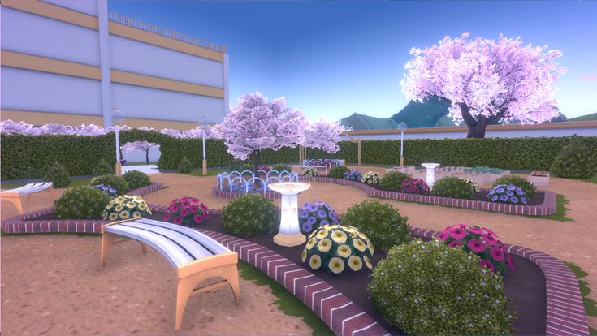
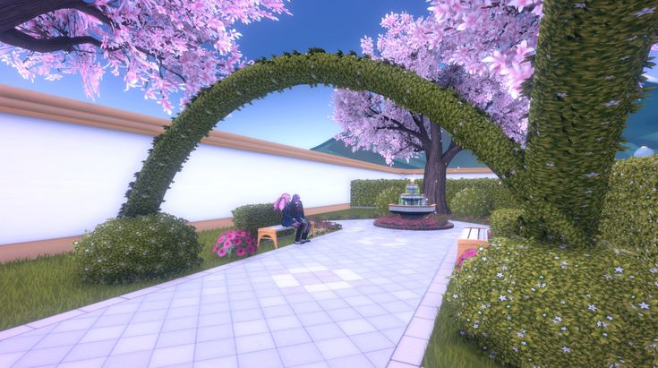

SENA_INFO.LOG

> STATUS: ONLINE
> LOG: MONITORING_RIVALS
> IMAGES: STABLE_BUILD
> LOG: MONITORING_RIVALS
> IMAGES: STABLE_BUILD
AYANO_AISHI.LOG

> SEMPAI: OBSERVED
> EMOTION: CUTE_OVERLOAD
> ♡ ♡ ♡
> EMOTION: CUTE_OVERLOAD
> ♡ ♡ ♡
IMG_03.PNG

IMG_04.PNG

IMG_05.PNG

RIVAL_DATABASE_STABLE_V4
| WEEK | ICON | NAME | DETAILED_REPORT |
|---|---|---|---|
| 01 |

|
Osana Najimi | Amiga de la infancia de Senpai. Tsundere clásica. Secreto: Es víctima de un acosador en línea. |
| 02 |

|
Amai Odayaka | Presidenta del club de cocina. Dulce y amable. Busca conquistar a Senpai a través de su estómago. |
| 03 |

|
Kizana Sunobu | Presidenta del club de drama. Arrogante y dramática. Desea a Senpai para su obra de Romeo y Julieta. |
| 04 |

|
Oka Ruto | Fundadora del club de ocultismo. Sombría y tímida. Cree que Senpai tiene un aura sobrenatural. |
| 05 |

|
Asu Rito | Presidenta del club de deportes. Energética y competitiva. Entrena con Senpai para las olimpiadas. |
RIVAL_INTRO.AVI